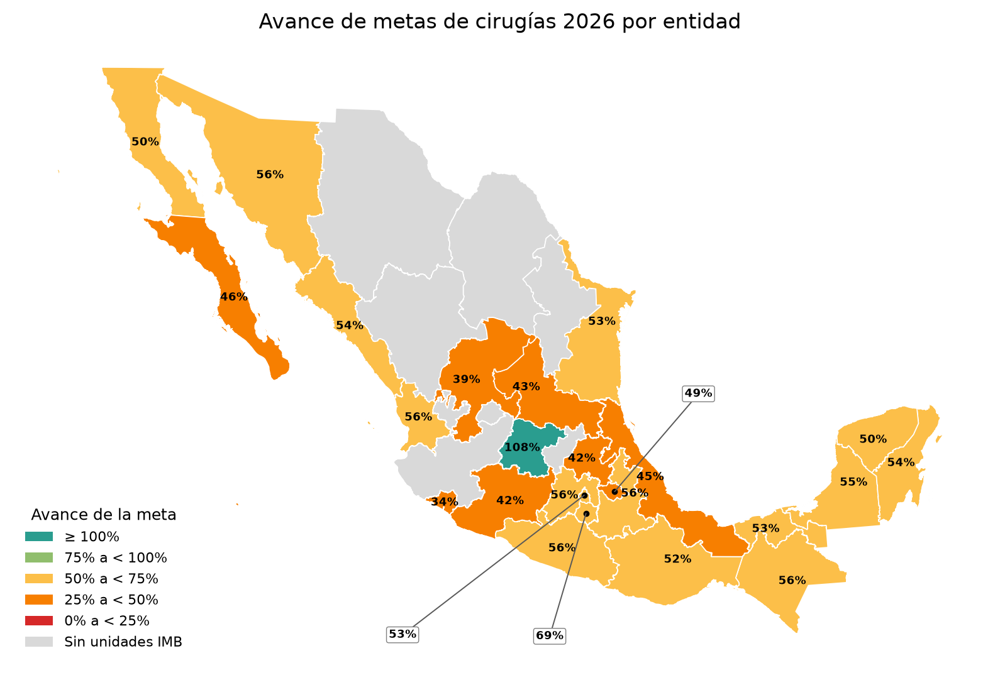
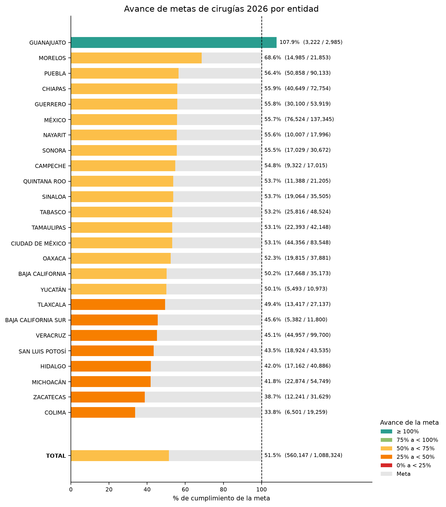
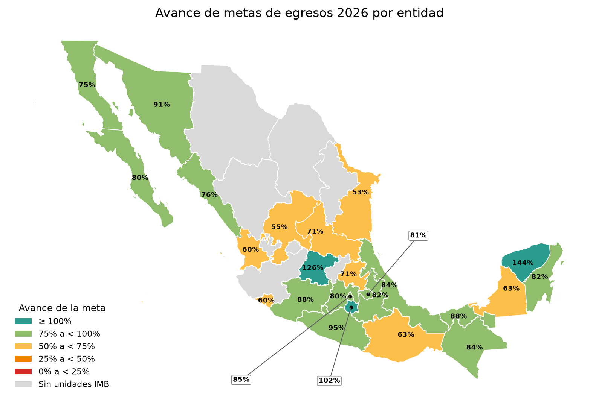
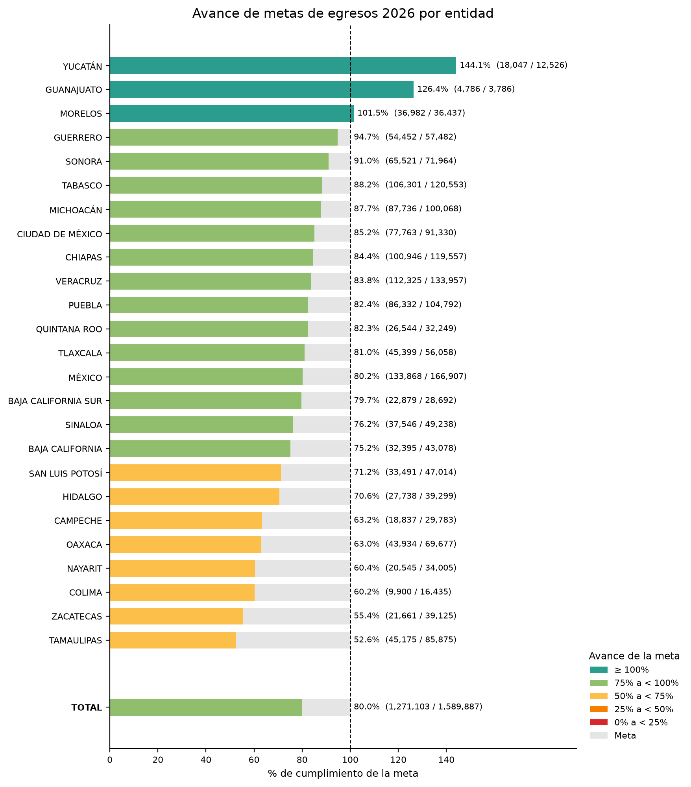

Datos de unidades de salud del IMSS Bienestar
Metas de cirugías y egresos hospitalarios del 2026
28 de octubre de 2026
Luis
M. González

Metas 2026
La propuesta de metas por unidad de salud fue realizada por la Unidad de Planeación Estratégica y Coordinaciones Estatales, (UPECE). Los datos para el cálculo de los avances se obtienen del Catálogo de CLUES, (Secretaría de Salud - DGIS, 23 de septiembre de 2026) y de Egresos Hospitalarios, (Secretaría de Salud - DGIS, 05 de octubre de 2026).
La fecha de corte es al 15 de octubre de 2026.
Condiciones para cirugías
Para la consulta SQL de procedimientos,
se establecieron las siguientes condiciones:
Que el tipo de procedimiento sea quirúrgico o diagnóstico:
tipo IN ('Q', 'D')Que el procedimiento se haya realizado dentro del quirófano:
AND egresos_procedimientos.quirof = '1'Que el procedimiento tenga tiempo de quirófano:
AND egresos_procedimientos.tiempo_quirofano != '99'Metas de cirugías
| entidad | meta_cirugias | cirugias | avance |
|---|---|---|---|
| BAJA CALIFORNIA | 35,173 | 17,668 | 50.23 |
| BAJA CALIFORNIA SUR | 11,800 | 5,382 | 45.61 |
| CAMPECHE | 17,015 | 9,322 | 54.79 |
| CHIAPAS | 72,754 | 40,649 | 55.87 |
| CIUDAD DE MÉXICO | 83,548 | 44,356 | 53.09 |
| COLIMA | 19,259 | 6,501 | 33.76 |
| GUANAJUATO | 2,985 | 3,222 | 107.94 |
| GUERRERO | 53,919 | 30,100 | 55.82 |
| HIDALGO | 40,886 | 17,162 | 41.98 |
| MÉXICO | 137,345 | 76,524 | 55.72 |
| MICHOACÁN | 54,749 | 22,874 | 41.78 |
| MORELOS | 21,853 | 14,985 | 68.57 |
| NAYARIT | 17,996 | 10,007 | 55.61 |
| OAXACA | 37,881 | 19,815 | 52.31 |
| PUEBLA | 90,133 | 50,858 | 56.43 |
| QUINTANA ROO | 21,205 | 11,388 | 53.70 |
| SAN LUIS POTOSÍ | 43,535 | 18,924 | 43.47 |
| SINALOA | 35,505 | 19,064 | 53.69 |
| SONORA | 30,672 | 17,029 | 55.52 |
| TABASCO | 48,524 | 25,816 | 53.20 |
| TAMAULIPAS | 42,148 | 22,393 | 53.13 |
| TLAXCALA | 27,137 | 13,417 | 49.44 |
| VERACRUZ | 99,700 | 44,957 | 45.09 |
| YUCATÁN | 10,973 | 5,493 | 50.06 |
| ZACATECAS | 31,629 | 12,241 | 38.70 |
| TOTAL | 1,088,324 | 560,147 | 51.47 |
Gráficas con los avances estatales


Metas de egresos
| entidad | meta_egresos | egresos | avance |
|---|---|---|---|
| BAJA CALIFORNIA | 43,078 | 32,395 | 75.20 |
| BAJA CALIFORNIA SUR | 28,692 | 22,879 | 79.74 |
| CAMPECHE | 29,783 | 18,837 | 63.25 |
| CHIAPAS | 119,557 | 100,946 | 84.43 |
| CIUDAD DE MÉXICO | 91,330 | 77,763 | 85.15 |
| COLIMA | 16,435 | 9,900 | 60.24 |
| GUANAJUATO | 3,786 | 4,786 | 126.41 |
| GUERRERO | 57,482 | 54,452 | 94.73 |
| HIDALGO | 39,299 | 27,738 | 70.58 |
| MÉXICO | 166,907 | 133,868 | 80.21 |
| MICHOACÁN | 100,068 | 87,736 | 87.68 |
| MORELOS | 36,437 | 36,982 | 101.50 |
| NAYARIT | 34,005 | 20,545 | 60.42 |
| OAXACA | 69,677 | 43,934 | 63.05 |
| PUEBLA | 104,792 | 86,332 | 82.38 |
| QUINTANA ROO | 32,249 | 26,544 | 82.31 |
| SAN LUIS POTOSÍ | 47,014 | 33,491 | 71.24 |
| SINALOA | 49,238 | 37,546 | 76.25 |
| SONORA | 71,964 | 65,521 | 91.05 |
| TABASCO | 120,553 | 106,301 | 88.18 |
| TAMAULIPAS | 85,875 | 45,175 | 52.61 |
| TLAXCALA | 56,058 | 45,399 | 80.99 |
| VERACRUZ | 133,957 | 112,325 | 83.85 |
| YUCATÁN | 12,526 | 18,047 | 144.08 |
| ZACATECAS | 39,125 | 21,661 | 55.36 |
| TOTAL | 1,589,887 | 1,271,103 | 79.95 |
Gráficas con los avances estatales


Descargas
Descargar Archivo
PDF